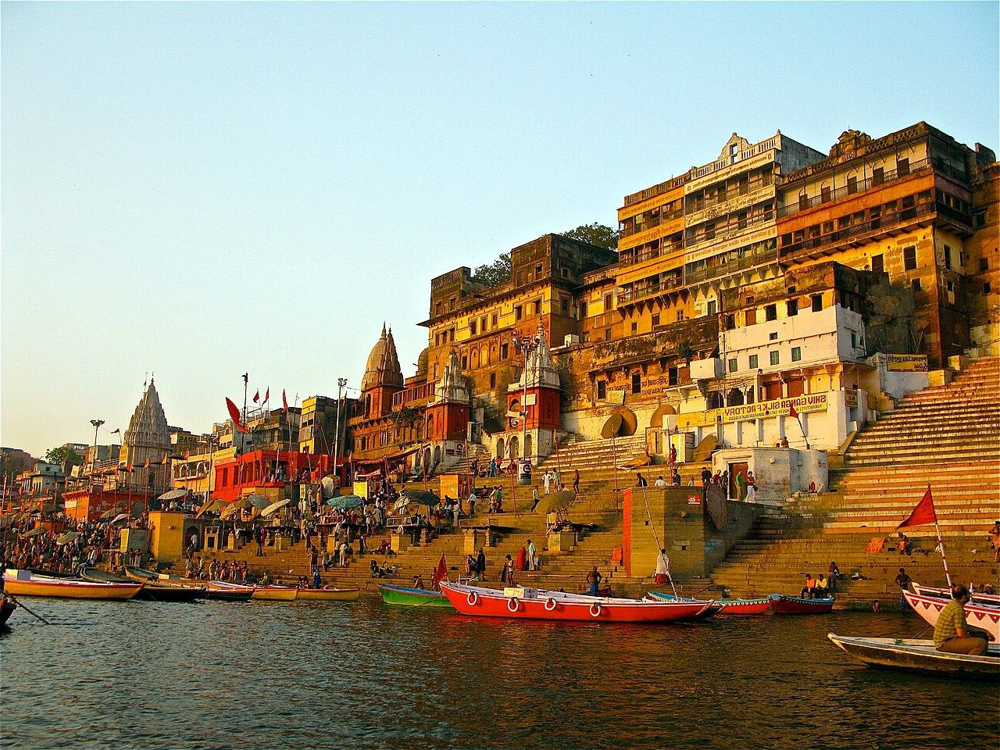
शुद्धि • सेवा • संगत
गंगा की धारा से सेवा की धारा तक।
सेवा की परंपरा, व्यवस्था की आधुनिकता। गंगा सेवा संगत ट्रस्ट, वाराणसी — Reg. No. 44, पंजीकरण 13 मार्च 2026।
हमारे बारे में
काशी और गंगा को समर्पित सेवा-यात्राABOUT GANGA SEVA SANGAT TRUST
गंगा सेवा संगत ट्रस्ट काशी की सांस्कृतिक चेतना और गंगा की निर्मलता को सेवा के माध्यम से जीवित रखने का प्रयास है।
हम कौन हैं — पंजीकृत ट्रस्ट, Reg. No. 44, वाराणसी। पंजीकरण: 13 मार्च 2026।
पता: मीर घाट, वाराणसी, उत्तर प्रदेश।
वेबसाइट: gangasevasangat.com · ईमेल: info@gangasevasangat.com
शुद्धि — घाट, पर्यावरण और मन की शुद्धि।
सेवा — निस्वार्थ, पर नियोजित और दस्तावेज़ीकृत।
संगत — साधु, युवा, स्वयंसेवक और समुदाय की सामूहिक शक्ति।
हमारा दृष्टिकोण — हर सेवा योजना से प्रारंभ हो, तैयारी से सशक्त हो, सत्यापन से शुद्ध हो और दस्तावेज़ीकरण से पारदर्शी बने।
१काशीआध्यात्मिक भूमि
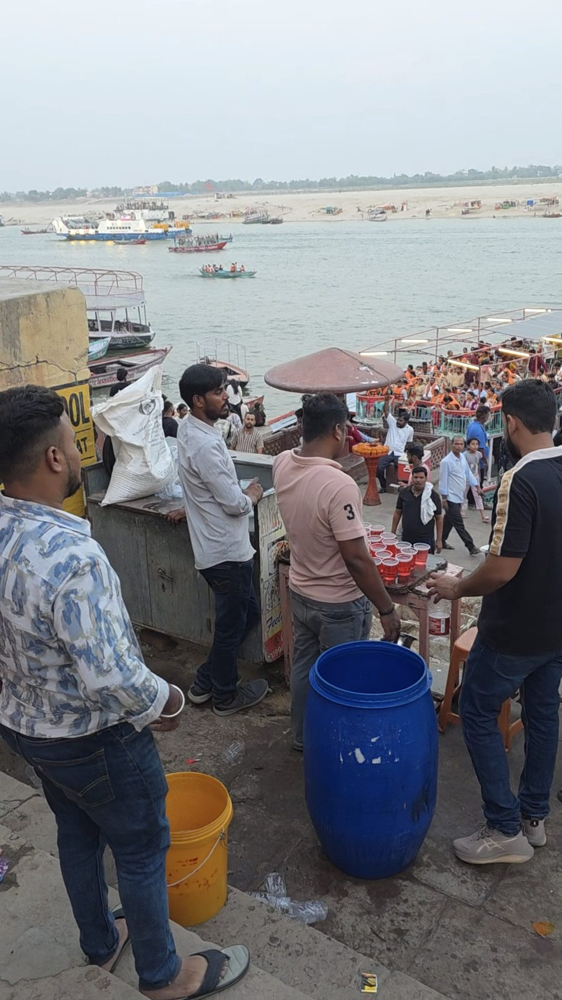
२गंगापावन धारा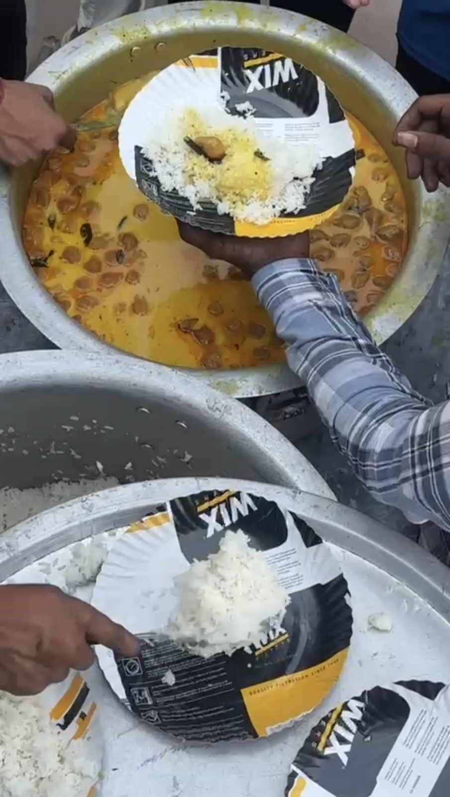
३सेवानिःस्वार्थ कर्म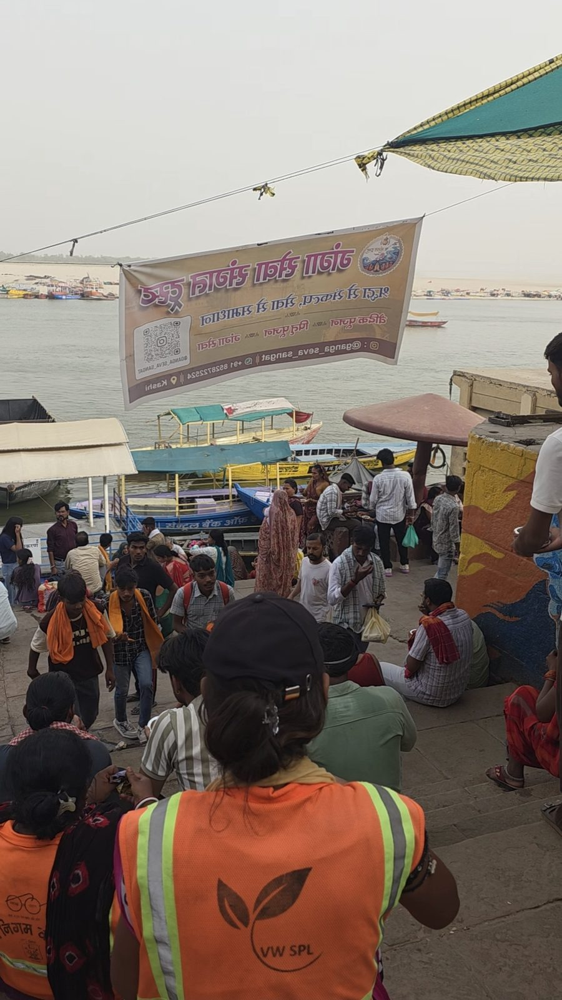
४संगतसामूहिक शक्ति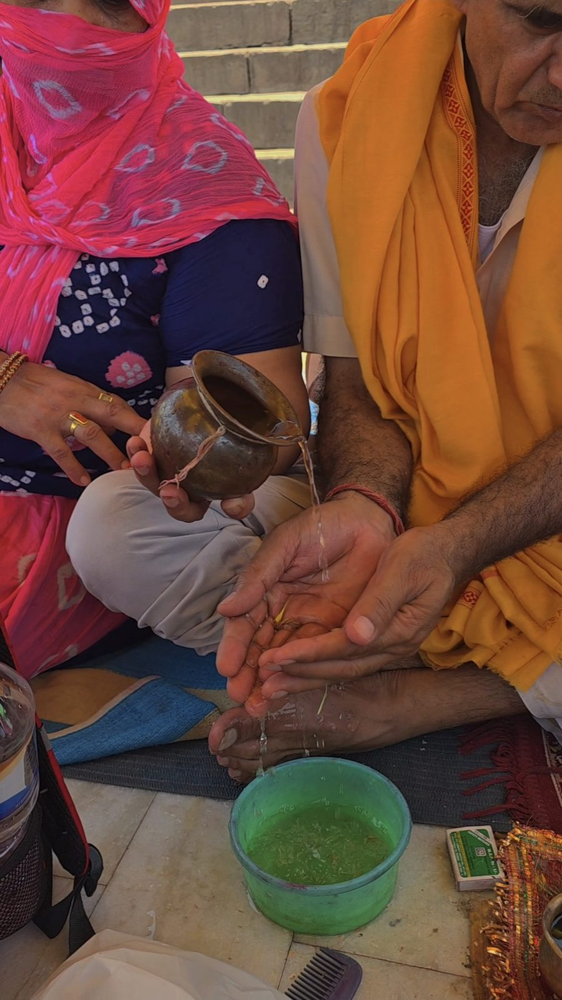
५संस्कारमूल्यों की नींव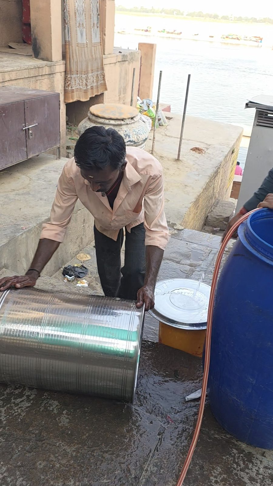
६स्वावलंबनआत्मनिर्भरता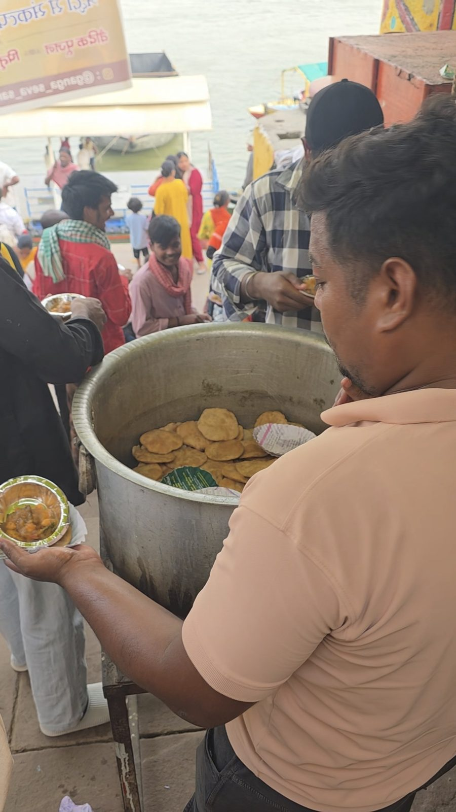
७समाज उत्थानदीर्घकालिक दृष्टि
नवीनतम सेवा
आज की सेवाLATEST SEVA — DOCUMENTED
यहाँ केवल आधिकारिक पोस्टर एवं सत्यापित विवरण के आधार पर, ट्रस्ट की नवीनतम सेवा प्रस्तुत की गई है।
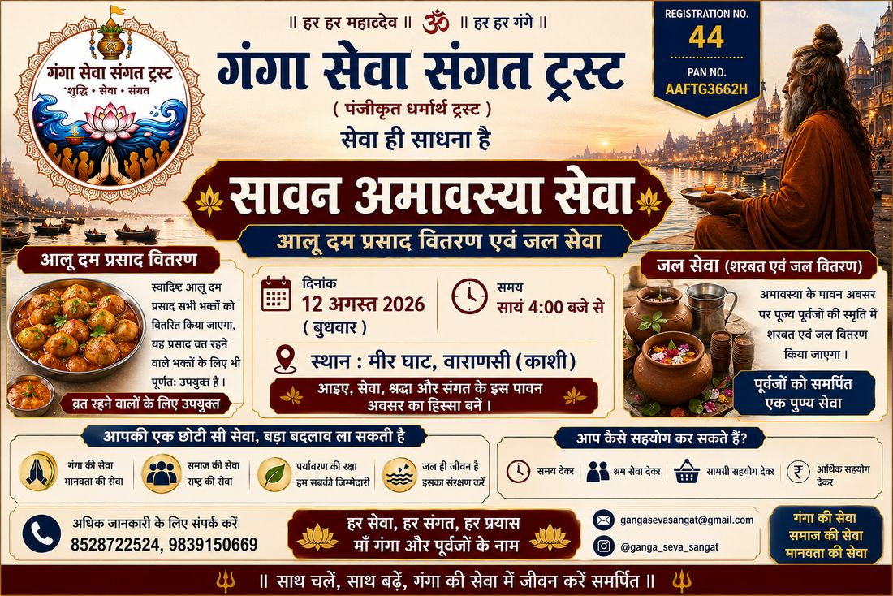
सावन अमावस्या सेवा
आलू दम प्रसाद वितरण एवं जल सेवा — मीर घाट, वाराणसी (काशी)। पूर्वजों की स्मृति में शरबत एवं जल वितरण। आधिकारिक पोस्टर के अनुसार।
- दिनांक 12 अगस्त 2026 (बुधवार), सायं 4:00 बजे से
- स्थान मीर घाट, वाराणसी (काशी)
- सेवा आलू दम प्रसाद वितरण — सभी भक्तों के लिए
- जल सेवा शरबत एवं जल वितरण, पूर्वजों को समर्पित
- विशेष व्रत रहने वालों के लिए उपयुक्त
हमारी सेवा
सेवा के आयामOUR SEVA INITIATIVES
वर्तमान, नियोजित और दीर्घकालिक — तीन स्पष्ट श्रेणियों में, ताकि जो हो रहा है और जो योजना में है, दोनों पारदर्शी रहें।
वर्तमान सेवा — अभी सक्रिय
अन्नपूर्णा / प्रसाद सेवा
भंडारा और प्रसाद वितरण — सामग्री सत्यापित प्रणाली।
आरती एवं आध्यात्मिक सेवा
संध्या आरती में सहयोग, पूजा सामग्री की व्यवस्थित तैयारी।
नियोजित — योजना चरण में
गंगा / पर्यावरण सेवा
घाट स्वच्छता, जन-जागरूकता, कचरा संग्रहण — योजना चरण में।
शिक्षा एवं बाल विकास
बच्चों के लिए सांस्कृतिक और शैक्षिक सहयोग — योजना चरण में।
तीर्थ एवं इवेंट सहयोग
काशी के पर्वों में स्वयंसेवक प्रबंधन — योजना चरण में।
दीर्घकालिक दृष्टि
कौशल एवं रोज़गार दृष्टि
स्थानीय युवाओं के लिए कौशल और स्वावलंबन — भविष्य दृष्टि।
प्रणाली
हम सेवा कैसे करते हैंTHE SERVICE JOURNEY
1
संकल्प2
योजना3
तैयारी4
सत्यापन5
सेवा6
दस्तावेज़ीकरण7
समीक्षा
सेवा की कहानी
प्रत्येक सेवा, एक दस्तावेज़ित यात्राSERVICE STORIES
यहाँ केवल वास्तविक, आधिकारिक पोस्टर एवं सत्यापित विवरण के आधार पर सेवाओं की झलक दी गई है।
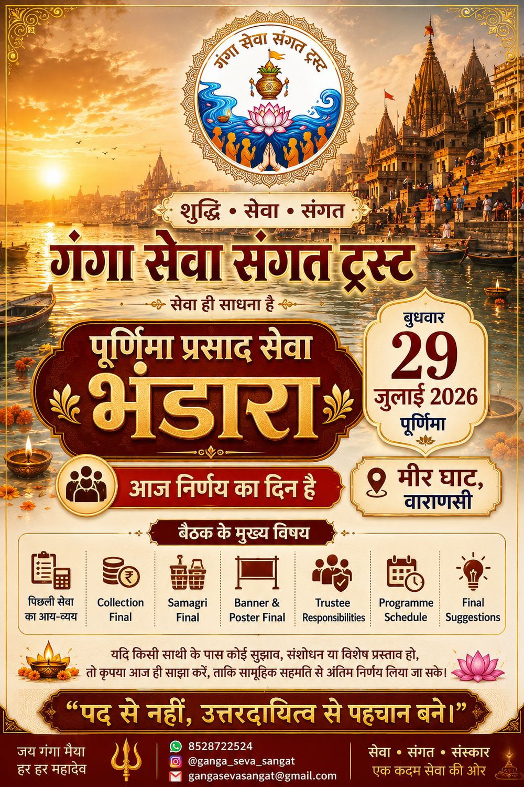
पूर्णिमा प्रसाद सेवा
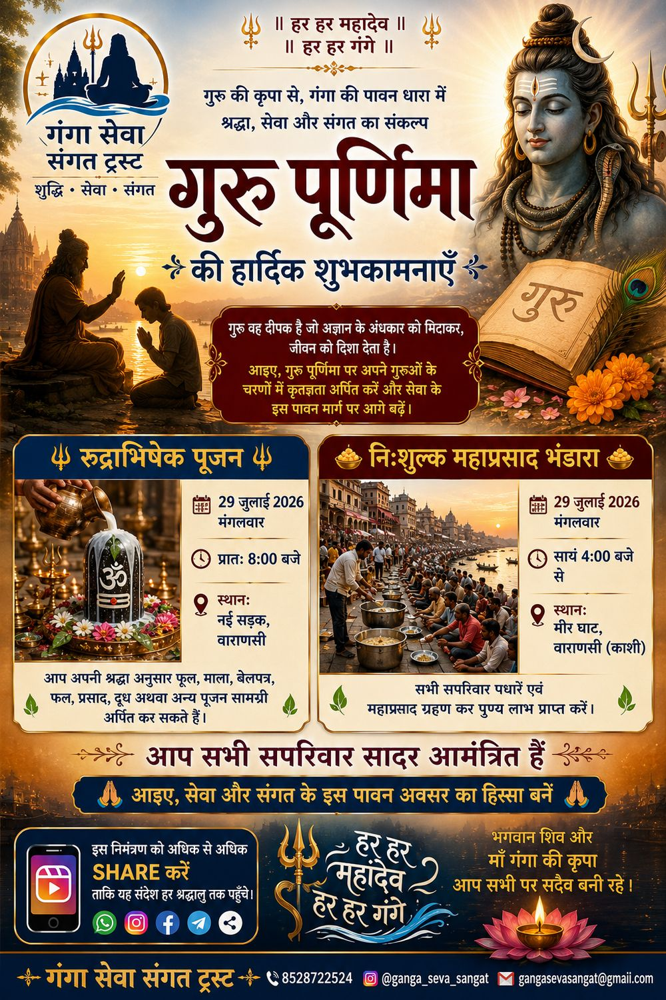
गुरु पूर्णिमा — रुद्राभिषेक
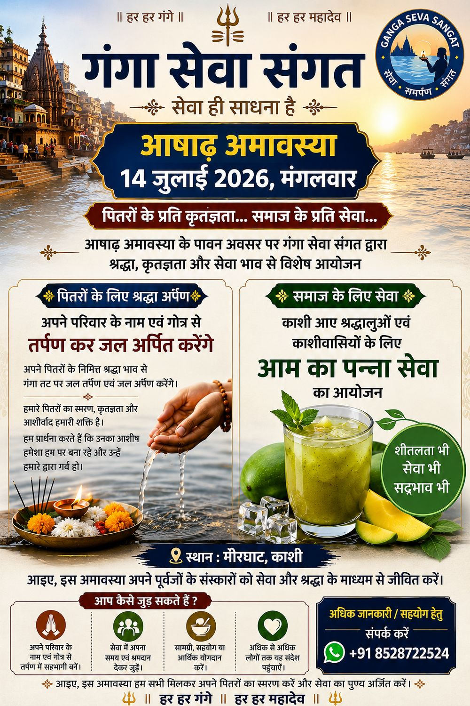
आषाढ़ अमावस्या सेवा
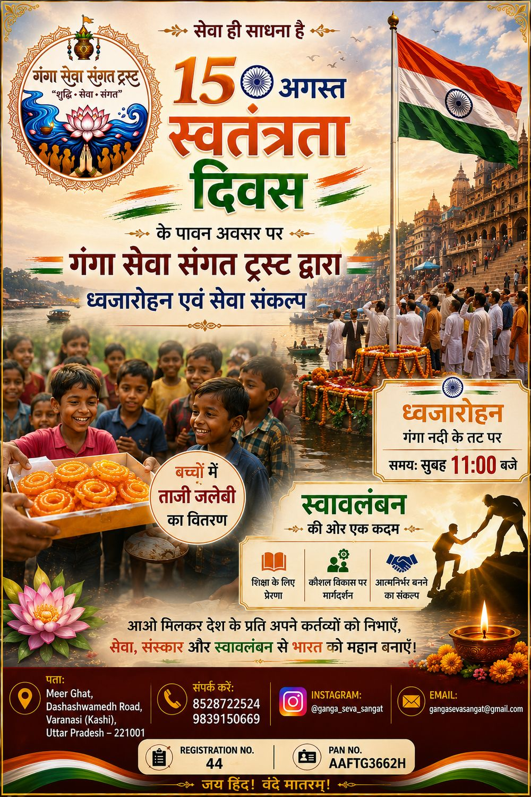
स्वतंत्रता दिवस सेवा
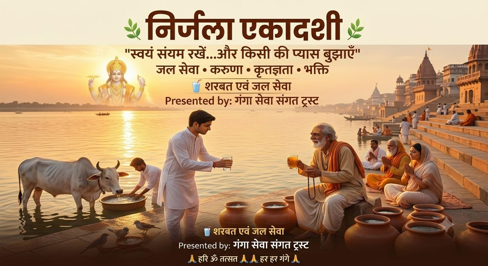
निर्जला एकादशी — जल सेवा
छवि दीर्घा
दृश्य यात्राVISUAL JOURNAL
यहाँ केवल उपलब्ध वास्तविक ट्रस्ट सामग्री एवं आधिकारिक सेवा पोस्टर प्रकाशित किए गए हैं।
सेवा गैलरी — वास्तविक तस्वीरें
ट्रस्ट की वास्तविक सेवा गतिविधियों की मूल तस्वीरें, श्रेणी अनुसार। किसी भी एल्बम को खोलने के लिए उस पर टैप/क्लिक करें।
नोट: उत्सव सेवा एवं अन्य सेवा एल्बम हेतु सत्यापित मूल तस्वीरें अभी उपलब्ध नहीं हैं — जैसे ही प्राप्त होंगी, प्रकाशित की जाएंगी। केवल पुष्टि किए गए वास्तविक चित्र ही यहाँ प्रकाशित किए जाते हैं।
सेवा पोस्टर / आयोजन दस्तावेज़
आधिकारिक रूप से जारी सेवा-सूचना एवं आयोजन पोस्टर — दस्तावेज़ीकरण हेतु।
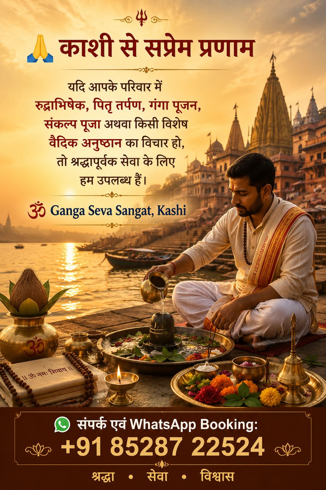
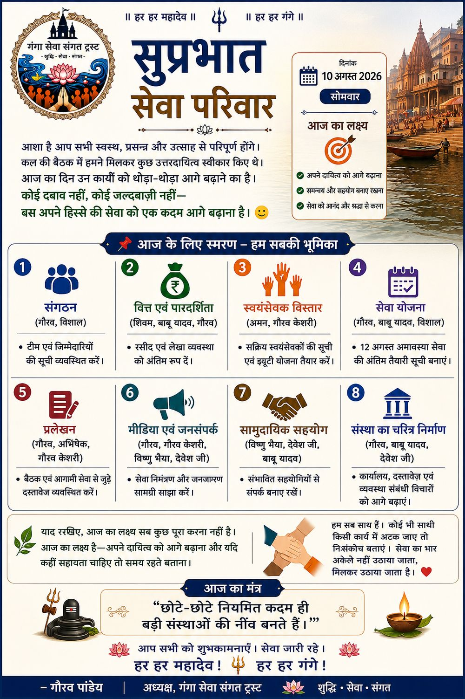
ट्रस्ट मंडल
हमारे ट्रस्टीगणBOARD OF TRUSTEES
वर्तमान ट्रस्ट मंडल के सामूहिक उत्तरदायित्व पर आधारित शासन।
गजानंद पाण्डेय
अध्यक्ष / Chief Founder Trustee—
उपाध्यक्ष
Vice President पद रिक्तअभिषेक जायसवाल
सचिव / Secretaryशिवम चौरसिया
कोषाध्यक्ष / Treasurerविशाल जायसवाल
प्रोग्राम मीडिया हेड / Program Media Head
शासन एवं पारदर्शिता
हमारी आचार संहिताGOVERNANCE & TRANSPARENCY
पाँच मूल सिद्धांत
01सेवा प्रथम
02उत्तरदायित्व
03पारदर्शिता
04अनुशासन
05सम्मान
पारदर्शिता की स्थिति
- पंजीकरण Reg. No. 44 · 13 मार्च 2026 सत्यापित
- पता मीर घाट, वाराणसी
- वेबसाइट gangasevasangat.com सत्यापित
- PAN AAFTG3662H
- NGO Darpan UP/2026/1112939 · Active
- ईमेल info@gangasevasangat.com सत्यापित
- 12A / 80G सत्यापन लंबित
हमारी दीर्घकालिक दृष्टि
2026 से 2030 तक — एक संस्थागत यात्राLONG-TERM VISION 2026–2030
⚠ यह योजना और दृष्टि है, उपलब्धि नहीं।2026 — नींव
संस्थागत आधार
Reg. No. 44, पंजीकरण 13 मार्च 2026, वेबसाइट gangasevasangat.com सक्रिय।
2027 — विस्तार
सेवा विस्तार
गंगा सेवा की आवृत्ति बढ़ाना, अन्नपूर्णा सेवा का मानकीकरण।
2028 — प्रणाली
प्रणाली सुदृढ़ीकरण
दस्तावेज़ीकरण एवं आंतरिक प्रणाली को सुदृढ़ करना।
2029 — समुदाय
सामुदायिक सहभागिता
कौशल सहभागिता एवं स्वयंसेवक विस्तार की योजना।
2030 — संस्थागत दृष्टि
आत्मनिर्भर संस्था
काशी-केंद्रित, आत्मनिर्भर सेवा संस्था — दीर्घकालिक दृष्टि।
सहयोग
सेवा में सहयोग करेंSUPPORT OUR SEVA
वर्तमान में सामग्री, कौशल और स्वयंसेवा के रूप में सहयोग प्रोत्साहित है। वित्तीय विवरण सत्यापन के बाद प्रकाशित होंगे।
🙏
स्वयंसेवा
अपना समय एवं श्रम सेवा में समर्पित करें।
🧺
सामग्री सहयोग
प्रसाद, पूजन सामग्री या आवश्यक वस्तुएँ भेंट करें।
🤝
कौशल सहयोग
अपने कौशल एवं अनुभव से संस्था को सशक्त बनाएँ।
सत्यापित सहयोग विवरण शीघ्र प्रकाशित किए जाएंगे।
किसी भी निजी खाते में दान न करें। केवल आधिकारिक ईमेल info@gangasevasangat.com से संपर्क कर सहयोग की पुष्टि करें। 12A / 80G — सत्यापन लंबित।
संपर्क
संपर्क करेंGET IN TOUCH
कार्यालय
📍मीर घाट, वाराणसी, उत्तर प्रदेश
Reg. No. 44 · 13 मार्च 2026
PAN: AAFTG3662H · NGO Darpan: UP/2026/1112939 — Active
Reg. No. 44 · 13 मार्च 2026
PAN: AAFTG3662H · NGO Darpan: UP/2026/1112939 — Active
🕒सोमवार–शनिवार, सुबह 10:00 – शाम 5:00
रविवार — बंद
रविवार — बंद